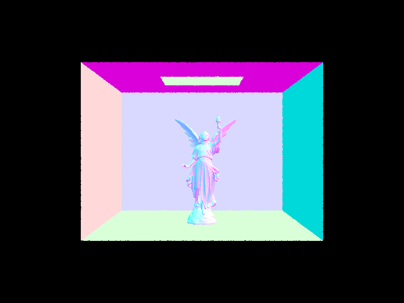

|
|
|
All of the text in your write-up should be in your own words. If you need to add additional HTML features to this document, you can search the http://www.w3schools.com/ website for instructions. To edit the HTML, you can just copy and paste existing chunks and fill in the text and image file names appropriately.
If you are well-versed in web development, feel free to ditch this template and make a better looking page.
Here are a few problems students have encountered in the past. Test your website on the instructional machines early!
"./images/image.jpg"Do NOT use absolute paths, such as
"/Users/student/Desktop/image.jpg"
.png != .jpeg != .jpg != .JPG
Here is an example of how to include a simple formula:
a^2 + b^2 = c^2
or, alternatively, you can include an SVG image of a LaTex formula.
In this project we built a raytracing program to render images with complex geometries and lighting functions. Starting
off with part 1 we formulated a ray generation and rendering pipeline that used trigonometry to convert coordinates from
world space to camera space. With this we were able to cast rays from the camera to each pixel in our image which we
could use for triangle and sphere intersections. We used the Moller-Trombore algorithm and averaged the resulting
normals based on their barycentric coordinates. We had a few problems with computing the normal correctly and had to
revisit this part later on. In part 2 we computed the bounding volume hierarchy using the bounding box centroid method
to determine which axis to split nodes on. We used this bounding volume hierarchy to create a bounding box intersection,
that way we could use the BVH to evaluate incoming rays much faster, because if they don’t intersect the bounding box,
then we know they won’t intersect any primitives belonging to the node. If it does intersect then we can continue
searching the nodes children until we reach the leaf node. We struggled with finding a suitable heuristic that was
fast enough while maintaining accuracy. We also took a while to determine where to place the primitives for leaf nodes
in memory, we ended up storing them on the heap. For part 3 we implemented direct illumination through uniform
hemisphere sampling as well as importance sampling. We noticed that the importance sampling resulted in less noisy
pictures. In part 4 we implemented global illumination via indirect lighting. We recursively tracked the path of the
ray bouncing off materials and computed the resulting lighting at the endpoints. We also implemented russian roulette
as a means to randomly estimate how deep we track the ray. Finally, in part 5 we implemented adaptive sampling which
allows us to improve on the efficiency of raytracing pixels by sampling the illumination and comparing it to a pre-determined
threshold. This allowed us to sample on the more complex geometries in a scene more often.
For the vast majority of the project, we worked in a pair programming environment, alternating between driver and navigator.
We did the rendering simultaneously to speed up the process, as it took us several hours to render all the images for our write-up.
It went well, and this project brought us together as teammates.
For ray generation, we started off by adjusting the (x, y) coordinates that were given to us as arguments by -0.5 each.
This is so that we could operate in the center of each pixel rather than a corner. Next we computed the cameraSpace vector,
which involved a calculation that was given in the spec. We converted the adjusted x coordinate to the camera space by
using tan(x * hFov) where hFov is in radians; hFov is the field of view angle for the x-axis. Similarly we converted the
adjusted y coordinate to the camera space by using tan(y * vFov) where vFov is the field of view angle for the y-axis.
We also realized that the tan function is symmetric, so -tan(0.5) = tan(-0.5), which allows us to simplify the calculation by pre-adjusting the coordinates.
We now convert the cameraSpace vector to worldSpace by multiplying it by c2w. Finally, we normalize the worldSpace vector
and return a ray that originates at pos, and goes in direction of this vector worldSpace.
For raytracing a pixel we created an averageD vector that would be an average of all the illuminations given by generated
sampled rays. There would be num_sample samplings, so we used a loop. Inside the loop we first computed the sampleInsidePixel
which is simply the origin plus a sample from gridSampler.get_sample(). We then normalize this pixel by dividing the x coordinate
by sampleBuffer.w and y by sampleBuffer.h. Then we created a ray using camera->generate_ray that takes in the normalized
coordinates. We also set the depth to max_ray_depth, and added the estimated global radiance illumination from the ray
to averageD. Finally, we averaged it by dividing by num_samples, updated the pixel in sampleBuffer, and set
sampleCountBuffer[x + y * sampleBuffer.w] to num_samples (given by the spec).
The triangle intersection algorithm we used was Moller-Trombore from the lecture slides and spec. We create vectors e1 and e2 by subtracting p1 from p2 and p3 respectively. Then we create a vector s that takes the origin of the ray subtracted by p1. With these 3 vectors we can create 2 more vectors, s1 and s2, which takes the cross product of r.d x e2 and s x e1 respectively. Our result is in the form of a division, where the numerator is a vector with the x coordinate being the dot product of s2, e2, the y coordinate is the dot product of s2 and s, and the z coordinate is the dot product of s2 and r.d. The denominator is the dot product of s1 and e1. Next we create t, b1, b2 which correspond to the 3 coordinates of the result. We also have b3 = 1 - b1 - b2. We have a couple checks to make sure that none of b1, b2, b3 are negative and that t is in the bounds of r.min_t and r.max_t. All that’s left is to set r.max_t to t, so that we know that this is the intersection point (i.e. nothing can be projected beyond this point without being blocked), setting isect’s member variables to their corresponding values given in the spec (bsdf, t, primitive), and finally setting isect->n to be n1 * b3 + n2 * b1 + n3 * b2 and returning true.
|
|

|
To construct a BVH, we recursively created nodes in a binary tree. Each node contained its own list of primitives. We created a bounding box that included each of those primitives' bounding boxes. If the number of primitives belonging to the node was less than max_leaf_count, then we do not split that node any further. Otherwise, we created another bounding box for each primitive in the list containing the centroid of each primitive's bounding box. For the heuristic, whichever axis, x, y, or z, was the longest for the centroid box became the chosen axis to perform splitting. We split each primitive in the list into 2 separate lists, left if it's bounding box's centroid's chosen axis value was less than or equal to the midpoint of the centroid box along the chosen axis, and right otherwise. If all the primitives ended up in just the left or just the right, we treated the node as a leaf node just like above. Otherwise, we assigned the left and right nodes of the current node to recursive calls of the method that has been discussed, passing in the left and right arrays of primitives to each respective node.
|

|
|
Cow took 48 seconds to render without using a BVH, and with a BVH, it only took 0.142 seconds. Maxplanck took 1.5 minutes to render without using a BVH, and with a BVH, it only took 0.8 seconds. CBlucy without using a BVH took about 5 minutes to render without using a BVH, and with a BVH, it only took 1.5 seconds.
In the hemisphere function, we perform the following operations to calculate the direct lighting estimation. For each
sample (the loop runs num_sample amount of times), we create a vector from a uniform sample of the hemisphereSampler
which is in the object coordinate system. Using that we convert to world space and then create a ray that originates
from hit_p (origin of the ray + ray direction multiplied by isect->t, i.e. where the ray of light hits the object)
plus the converted sample vector multiplied by an epsilon constant EPS_F, in the direction of the converted vector.
We also set the min_t of the ray to this epsilon constant, as described in the spec. Then we create a sample intersection,
and check if it intersects our bounding volume hierarchy. If it does, we know the ray of light will be unobstructed and
visible in our scene. Then we compute the monte carlo estimator using the product of isect.bsdf,
sample_isect.bsdf.get_emission, taking the cosine of the sample vector (prior to world space conversion) and 2pi
(this was all described in the spec). Then we add it to our running sum vector L_out. At the end of the loop, we
return L_out divided by the number of samples (num_samples) to get an average vector.
In the importance function, we first iterate through every light in scene->lights. In each iteration, we first check
if the light is a delta light, in which case we set num_samples to 1 and only run the following loop once. In this
following loop, we take a sample_L that is the emitted radiance, we also fill in values for the w_in vector which is
converted to object space, the distance to light, and the pdf. If the z coordinate for the w_in vector is less than
zero, then we know this light will not be visible by the camera, and we ignore it. Otherwise, we generate a ray that
originates at hit_p (origin of the ray + ray direction multiplied by isect->t, i.e. where the ray of light hits the
object), wi (w_in vector that is in world space) multiplied by the epsilon constant, in the direction of wi. We set
the rays max_t to distance to light minus the epsilon constant, and min_t to the epsilon constant. Now we create a
sample intersection and check if it intersects our bounding volume hierarchy. If it doesn’t, we know the ray of light
will be directly casting light onto the hit point rather than being obstructed. Then we can add the monte carlo
calculation (similar to the previous one described above) to an averaging vector L_out, which we divide by num_samples
before returning.
| Uniform Hemisphere Sampling | Light Sampling |
|---|---|
|
|
|
|
|
|
|
|
|
|
|
|
Comparing the CBSpheres.png images with different light ray amounts, I noticed that there is a drastic difference between each of them. With 1 light ray, there is a significant amount of noise, to the point where we can’t see the object without getting a headache. 4 light rays is a lot better, and most of the noise is cancelled out. 16 light rays improves on this, and from a distance it looks pretty much perfect, although the back walls have some noise still. With 64 light rays, there is virtually no noise at all, whether on the spheres or the walls.
Comparing the images of the bunny side-by-side, we noticed that the importance lighting sampling was significantly less grainy, and the object rendered was a lot clearer to see. They both had the overall scene being generated fine, however, the uniform hemisphere sampling was a lot noisier. The uniform hemisphere sampling also took a bit longer to generate.
Our indirect lighting function had a recursive structure, as was suggested in the spec. For each call of at_least_one_bounce_radiance() we would start by setting the output vector L_out to one_bounce_radiance. Then we would compute the bsdf vector by sampling using the sample_f function we implemented in Part 4.1, along with setting a russian roulette probability to 0.35. Now we would check the ray’s depth. If it was 1, then this means that there are no more bounces (since we have already computed one_bounce_radiance of this ray) and we simply return L_out. Otherwise, we run a coin flip operation on this russian roulette probability, if it is true then we know to recurse on this sample. We create a directional vector that is in world space by converting w_in (given by sample_f) from object to world, and using it to create a new ray that originates from hit_p plus the directional vector, in the direction of this directional vector, with depth = r.depth - 1. Then we create a sample intersection, and check if it intersects our bounding volume hierarchy. If it does, we know the ray of light will hit an object, and we need to account for this in our L_out. We add the recursive call to L_out by using this sample_isect and the new ray, multiplying it by the bsdf and cos(w_in), then dividing by the russian roulette probability and the pdf. Finally, we return L_out.
|
|
|
|
|
|
With only direct illumination, just the top of the spheres are lit, and their bottoms are completely black, and there are hardly and wall shadows. With only indirect illumination, the top of the spheres are much darker because they are not receiving that initial ray of light from the ceiling, but the bottom of the spheres are much lighter, and the shadows from the spheres also appear on the walls now.
|
|
|

|
|
|
|
The image continuously gets brighter the more the maximum ray depth is increased. The magnitude of the difference between ray depths decreases as the ray depths increase. When max_ray_depth = 0, just the zero bounce illumination appears, so the entire image is black except for the ceiling light. When max_ray_depth = 1, mostly just the top of the bunny is lit up, where the light rays directly from the ceiling light are hitting. When max_ray_depth = 2, the image becomes overall lighter because indirect rays are now able to hit places like the bunny's stomach. As the ray_depth increases from there, the overall brightness continues to increase, but the maximum differences can be seen between max_ray_depths of 0, 1, and 2.
|
|
|
|
|
|

|
|
|
|
I used the wall-e picture to compare different sample-per-pixel rates. With 1 sample per pixel, the image was extremely grainy and noise was prevalent in most of the picture. Even by doubling the sample per pixel rate to 2, we could see a major improvement in the clarity of the image, such that his eyes and other features were more easily distinguishable. However, there was still a large amount of noise. Taking 4 samples per pixel was certainly better in terms of clarity, however, it also began taking a bit of time to generate these images. By the time we took 8 samples per pixel, we could tell that the noise was mostly gone and the image looked fine from a distance. Up close, we could see issues with graininess. 16 samples per pixel took about 4 minutes to render, which was a little concerning. However, we could still tell the difference between sampling rates up to this point. Taking 64 samples per pixel was more of a minor improvement, and at this point there wasn’t much noise to filter out. It took about 20 minutes to run. Finally, we have 1024 samples per pixel, which resulted in virtually no noise at all, even from close up. However, it took nearly 2 hours to run, which was quite frustrating.
Our adaptive sampling algorithm was a way to improve on the efficiency of our raytracing code from part 1.2. The overall algorithm is outlined in the spec, so we were able to follow it. We created variables s1 and s2 that we would use for illumination accumulation. During each est_radiance_global_illumination call we would compute the illumination value of it (via illum()) and add it to s1, and add the squared value to s2. Now we had to compute the convergence. To do this we first calculated the mean and variance, and from that we found the convergence. We then checked if the convergence was less than or equal to the maxTolerance (given as 0.05) multiplied by the calculated mean. If so we would break out of the loop. To correctly account for the number of samples tracked we set a count that would initially be set to num_samples and be updated in case we broke out of the loop prematurely. We would also run this check every samplesPerBatch (default was 32) times, and since we were looping over num_samples using an integer i, we could simply check using i + 1 % samplesPerBatch == 0. Now count would store the real number of samples generated, so we would divide our average vector by count and set sampleCountBuffer[x + y * sampleBuffer.w] (as per part 1) to count as well.
|
|

|

|
|